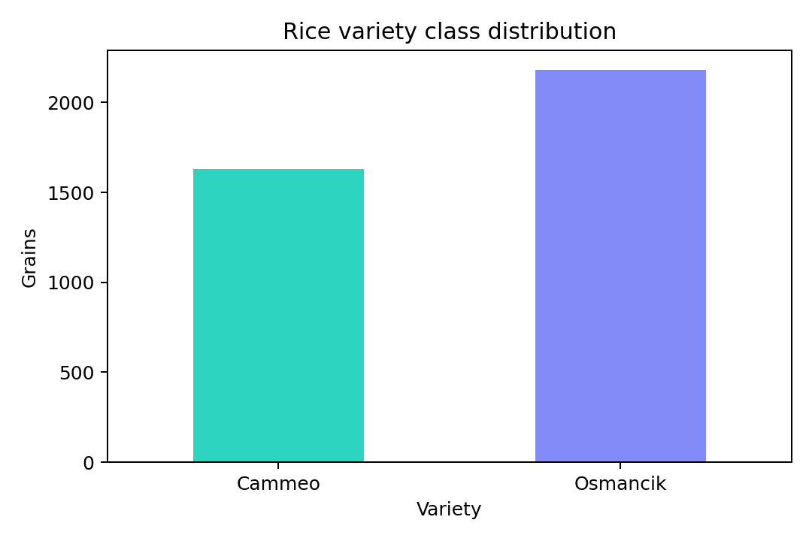
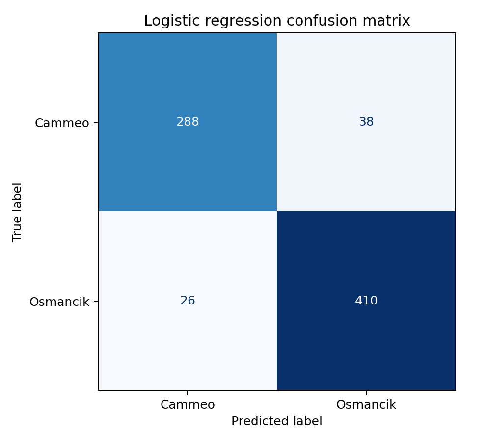

Target audience
Instructors, data/ML hiring managers, quality analysts, and agricultural technology teams seeking clear evidence of an end-to-end classification workflow.
Artifact 4 · Applied machine learning
A reproducible classifier that distinguishes Cammeo and Osmancik rice grains from seven image-derived morphological measurements.
Visual similarity can make manual rice-variety identification difficult. This artifact investigates whether a transparent machine-learning workflow can classify two certified Turkish rice varieties from measured grain shape. It demonstrates data validation, leakage-safe preprocessing, modeling, evaluation, and honest interpretation.
Instructors, data/ML hiring managers, quality analysts, and agricultural technology teams seeking clear evidence of an end-to-end classification workflow.
The project shows that I can turn real measurements into repeatable evidence while communicating both performance and limitations.
The less-common UCI Rice (Cammeo and Osmancik) dataset contains 3,810 grains, seven real-valued morphological features, and two class labels.
Build and evaluate an explainable baseline that predicts Cammeo or Osmancik while preventing preprocessing leakage.
Loaded the ARFF data, decoded labels, checked schema, missing values, duplicates, and class balance; created a stratified 80/20 split; fitted scaling only through a training pipeline; trained logistic regression; and evaluated unseen test records with accuracy, macro F1, and a confusion matrix.
Python, pandas, SciPy, scikit-learn, Matplotlib, HTML, CSS, and GitHub Pages.


Unlike a score-only demonstration, this artifact includes the original dataset, executable code, data-quality audit, saved metrics, visual outputs, leakage-safe pipeline, and limitations in one reviewable package.
The same workflow supports quality-control and classification problems in agriculture, manufacturing, healthcare imaging, and other domains where measured shape informs a decision.
This project reinforced that a strong result depends on disciplined preparation and evaluation. My next step would compare cross-validated logistic regression with a tree-based model and test robustness on grains collected under new conditions.